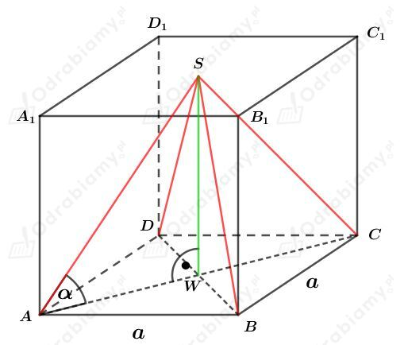
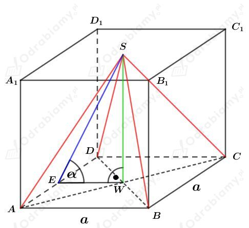
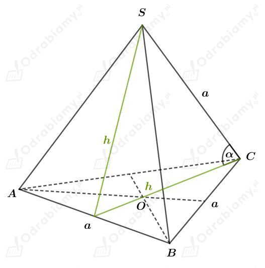
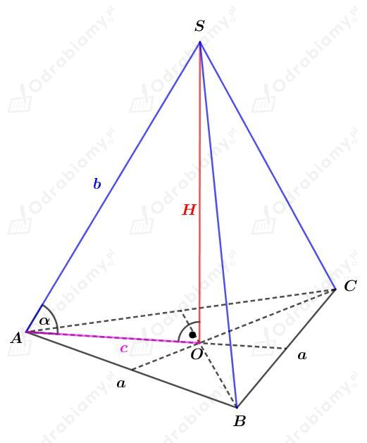

a)
Rysunek:

Odcinek WA to połowa przekątnej kwadratu, czyli
Odcinek WS ma taką samą długość jak krawędź sześcianu, czyli
Korzystając z twierdzenia Pitagorasa mamy:
Wyznaczmy sinus kąta 𝛼. Mamy:
b)
Rysunek:

Odcinek EW stanowi połowę długości boku kwadratu, czyli
Odcinek WS ma taką samą długość jak krawędź sześcianu, czyli
Korzystając z twierdzenia Pitagorasa mamy:
Wyznaczmy sinus kąta 𝛼. Mamy:
a)
Rysunek:

Czworościan foremny zbudowany jest z czterech przystających trójkątów równobocznych, zatem
Korzystając z twierdzenia cosinusów otrzymujemy:
Korzystając z jedynki trygonometrycznej
mamy:
b)
Rysunek:

Niech hp będzie długością wysokości podstawy, a hb długością wysokości ściany bocznej.
Z treści zadania wiemy, że
czyli
Korzystając z twierdzenia Pitagorasa otrzymujemy:
Korzystając z twierdzenia Pitagorasa otrzymujemy:
Wyznaczmy sinus kąta 𝛼. Mamy: